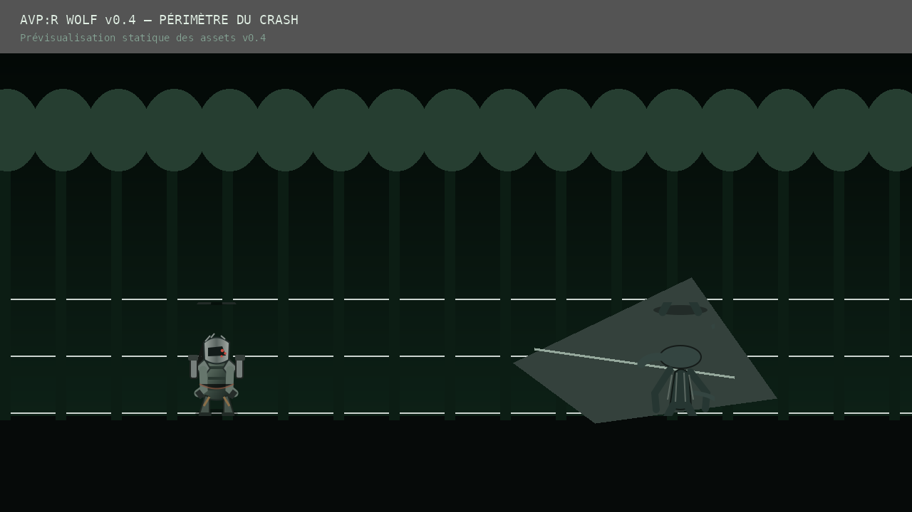
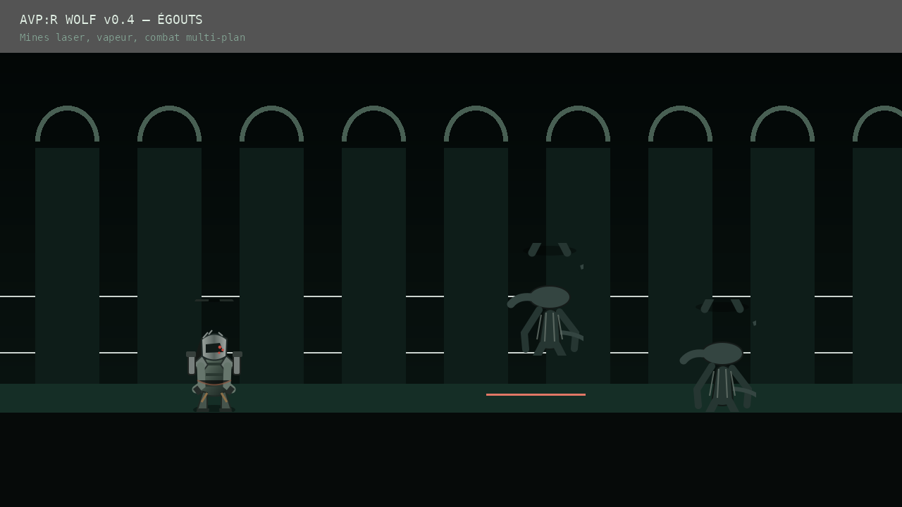
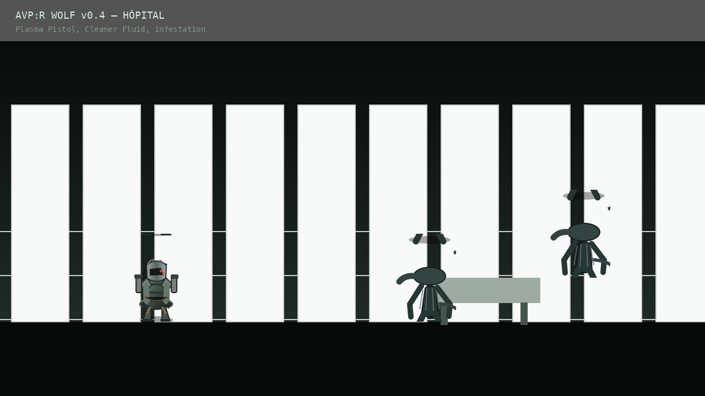
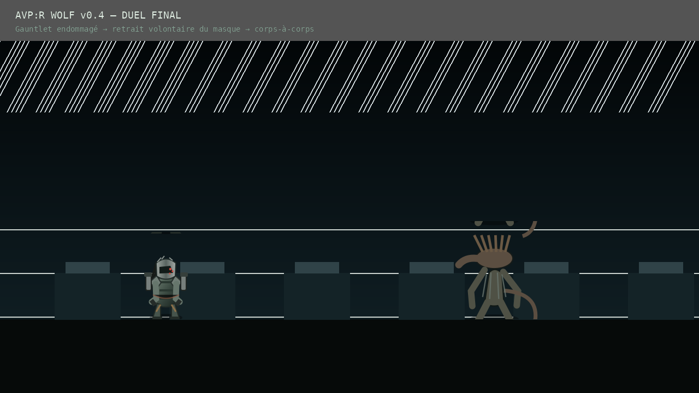
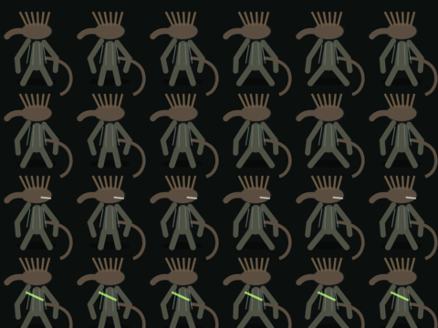
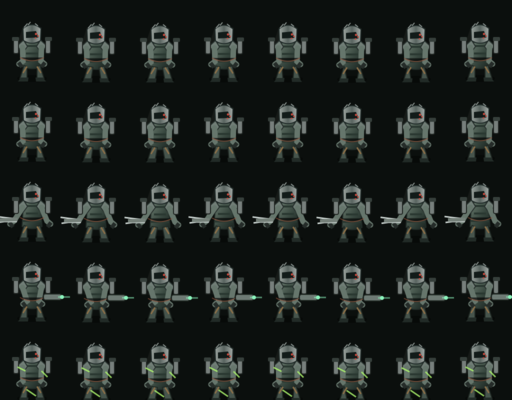
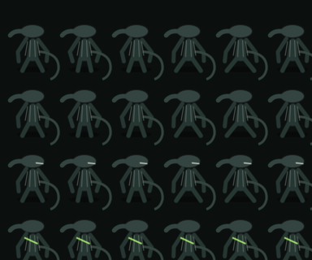

AVP:R — WOLF / v0.4
Les quatre scènes ci-dessous sont des prévisualisations statiques produites à partir des assets v0.4, pas des captures navigateur. Chromium ne termine pas dans ce conteneur, y compris sur about:blank. Les planches suivantes sont les sprite-sheets réellement embarquées dans le DLC.






